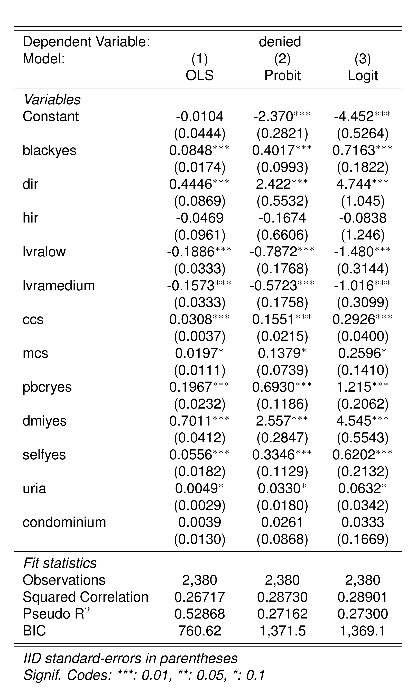

dir hir lvr ccs mcs pbcr dmi self single uria condominium black
1 0.221 0.221 0.8000000 5 2 no no no no 3.9 0 no
2 0.265 0.265 0.9218750 2 2 no no no yes 3.2 0 no
3 0.372 0.248 0.9203980 1 2 no no no no 3.2 0 no
4 0.320 0.250 0.8604651 1 2 no no no no 4.3 0 no
5 0.360 0.350 0.6000000 1 1 no no no no 3.2 0 no
6 0.240 0.170 0.5105263 1 1 no no no no 3.9 0 no
deny
1 no
2 no
3 no
4 no
5 no
6 no
Il dataset Hmda contiene 2381 osservazioni e 13 variabili. Le variabili sono descritte nella ?@tbl-descr.
Variabile
Descrizione
dir
Rapporto tra i pagamenti del debito e il reddito totale. Indica quanto del reddito totale viene destinato al pagamento dei debiti.
hir
Rapporto tra le spese abitative e il reddito. Misura la percentuale del reddito spesa per le abitazioni.
lvr
Rapporto tra l’importo del prestito e il valore stimato della proprietà. Indica quanta parte del valore della proprietà è finanziata tramite prestito.
ccs
Punteggio di credito al consumo, da 1 a 6, dove un valore basso rappresenta un buon punteggio.
mcs
Punteggio di credito ipotecario, da 1 a 4, dove un valore basso indica un buon punteggio di credito.
pbcr
Presenza di cattivi precedenti creditizi pubblici. Variabile binaria (si/no) che indica se esistono precedenti negativi.
dmi
Richiesta di assicurazione sul mutuo negata. Variabile binaria (si/no) che indica se è stata negata l’assicurazione sul mutuo.
self
Se l’individuo è un lavoratore autonomo. Variabile binaria (si/no).
single
Se l’applicante è single. Variabile binaria (si/no) che indica lo stato civile.
uria
Tasso di disoccupazione del 1989 nel Massachusetts, nel settore di impiego dell’applicante. Fornisce contesto economico.
condominium
Se l’unità abitativa è un condominio (=1). Variabile binaria (1/0) che descrive il tipo di proprietà abitativa.
black
Se l’applicante è di etnia afroamericana. Variabile binaria (si/no), usata in analisi di discriminazione razziale.
deny
Se la domanda di mutuo è stata negata. Variabile binaria (si/no) che indica l’esito della richiesta di mutuo.
Statistiche Descrittive
Il dataset contiene un’osservazione con alcuni dati mancanti (NA). Questa osservazione può essere eliminata mediante na.omit. Questa funzione restituisce un data.frame con le osservazioni complete, cioè tutte le osservazioni per cui tutte le varabile sono non NA.
Hmda <-na.omit(Hmda)
Il pacchetto gtsummary contiene delle funzioni molto utili per calcolare le statistiche descrittive delle variabili presenti in un data.frame.
Il coefficient sulla variable blackyes (la dummy automaticamente creata da R che prende il valore 1 se black=="yes") è 0.085. L’interpretazione di questo coefficiente è che una persona di coloro a parità di altre caratteristiche ha una probabilità di avere il mutuo concesso più bassa di 0.085.
Per avere un’idea di quanto sia grande questa differenza, possiamo calcolare la variazione relative della probabilità: \[
\frac{\Pr(black=1|X) - \Pr(black=0|X)}{\Pr(black=0)} = \frac{0.085}{0.093} \approx 0.91 (91\%)
\] In altre parole, se rapportata alla probabilità (non condizionata) che hanno le persone non di colore di ottenere il mutuo (9.3%), le persone di colore hanno una probabilita’ piu bassa di ottenere il mutuo di circa il 90%.
Modello Logit e Probit
logit_HMDA <-feglm( denied ~ black + dir + hir + lvra + ccs + mcs + pbcr + dmi + self + uria + condominium,data = Hmda,family =binomial("logit") )
probit_HMDA <-feglm( denied ~ black + dir + hir + lvra + ccs + mcs + pbcr + dmi + self + uria + condominium,data = Hmda,family =binomial("probit") )
Confrontiamo i tre diversi modelli:

Mentre il coefficiente del modello lineare per la probabilità si presta immediatamente ad una interpretazione, i coefficienti del modello logit e probit ci danno esclusiavamente delle informazioni riguardo al segno della relazione fra la probabilità e le rispettive variabili. Per ottenere un’interpretazione bisogna procedere calcolando le predizioni.
Predizioni
Il modo più semplice per ottenere una stima della differenza nella probabilita’ che il mutuo venga accettto per le persone di colore e quelle non di colore e’ procedere a calcolare le predizioni a dei valori prespecificati delle \(X\):
Per il modello probit: \[
\begin{aligned}
\underset{\text{probabilità diniego mutuo per black}}{\underbrace{\Phi\left(\hat{\beta}_{0}+\hat{\beta}_{1}+\hat{\beta}_{2}\bar{dir}+\hat{\beta}_{3}\bar{hir}+\hat{\beta}_{6}\bar{ccs}+\hat{\beta}_{7}\bar{mcs}+\hat{\beta}_{11}\bar{uria}\right)}}\\-\underset{\text{probabilità diniego mutuo per non-black}}{\underbrace{\Phi\left(\hat{\beta}_{0}+\hat{\beta}_{2}\bar{dir}+\hat{\beta}_{3}\bar{hir}+\hat{\beta}_{6}\bar{ccs}+\hat{\beta}_{7}\bar{mcs}+\hat{\beta}_{11}\bar{uria}\right)}}
\end{aligned}
\] e per il modello logit \[
\begin{aligned}
\underset{\text{probabilità diniego mutuo per black}}{\underbrace{F\left(\hat{\beta}_{0}+\hat{\beta}_{1}+\hat{\beta}_{2}\bar{dir}+\hat{\beta}_{3}\bar{hir}+\hat{\beta}_{6}\bar{ccs}+\hat{\beta}_{7}\bar{mcs}+\hat{\beta}_{11}\bar{uria}\right)}}\\-\underset{\text{probabilità diniego mutuo per non-black}}{\underbrace{F\left(\hat{\beta}_{0}+\hat{\beta}_{2}\bar{dir}+\hat{\beta}_{3}\bar{hir}+\hat{\beta}_{6}\bar{ccs}+\hat{\beta}_{7}\bar{mcs}+\hat{\beta}_{11}\bar{uria}\right)}},
\end{aligned}
\] dove \(F(\cdot)\) è la funzione di ripartizaione della distribuzione logistica.
Per ottenere le predizioni è necessario creare un data.frame contenente i valori per le \(X\):
new <-data.frame("dir"=mean(Hmda$dir),"hir"=mean(Hmda$hir),"lvra"="low","ccs"=mean(Hmda$ccs),"mcs"=mean(Hmda$mcs),"pbcr"="no","dmi"="no","self"="no","black"=c("no", "yes"),"uria"=mean(Hmda$uria),"condominium"=0)
Possiamo ottenere le predizioni per i due modelli usando la funzione predict:
logit_pred e probit_pred sono due vettori che hanno come prime elemento la stima della probabilità per black and come secondo la stima della probabilità per non-black (condizionatamente ai valori specificati in new per le altre variabili). La differenza di questi due valori è la stima della differenza della probabilita’.
delta_logit =diff(logit_pred)delta_logit
[1] 0.04204562
delta_probit =diff(probit_pred)delta_probit
[1] 0.05186245
Lo stesso risultato puo’ essere ottenuto usando marginaleffects
Questa stima e’ equivalente a quella ottenuta con marginaleffects
avg_slopes(logit_HMDA, variables ="black")
Term Contrast Estimate Std. Error z Pr(>|z|) S 2.5 % 97.5 %
black yes - no 0.0628 0.0184 3.41 <0.001 10.6 0.0267 0.0989
Columns: term, contrast, estimate, std.error, statistic, p.value, s.value, conf.low, conf.high
Type: response
I vantaggi di utilizzare marginaleffects rispetto a procedere ai calcoli manuali sono che 1) otteniamo anche gli errori standard per l’effetto e 2) marinaleffects calcola gli effetti per tutte le variabili del modello:
Queste stime sono stime medie. Possiamo anche visualizzare le stime usilizzando le \(X\) sdi ciascun individuo nel nostro campione e poi visualizzare le differenze.
a <-slopes(logit_HMDA)b <-slopes(logit_HMDA, newdata ="mean")library(ggplot2)ggplot(a, aes(x=estimate)) +geom_histogram(bins =60) +geom_vline(data=b, aes(xintercept = estimate), color ="darkred") +facet_wrap(contrast~term, scales="free") +theme_minimal()